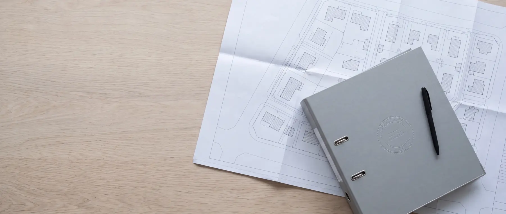

Jogszabályi áttekintés
A 2012-es összefoglalónkat ma is sokan használják. Nem vettük le — de mellé tettük, mi változott azóta.

Miért ez a lap
Tizennégy év alatt sok minden változott
A házi szennyvíztisztítók engedélyezése nem egyetlen jogszabályban áll: a keretet a vízgazdálkodási törvény adja, a hatáskört egy kormányrendelet osztja szét, a műszaki követelményt egy miniszteri rendelet, a határértéket egy másik, a talajterhelési díjat pedig egy törvény és a helyi önkormányzati rendelet együtt.
Ebből következik, hogy egy összefoglaló gyorsan elavul. A miénk 2012-ben készült, és azóta négy ponton módosultak a szabályok, két helyen pedig olyan rendelet lépett be, ami akkor még nem létezett. Ez a lap ezt vezeti át — nem a régi helyett, hanem mellé.
Ez a lap tájékoztat, nem jogi tanácsot ad. A hivatkozott jogszabályt minden esetben érdemes elolvasni, a konkrét projektet pedig az adott helyszín és a hatóság alapján megítélni.
Ami változott
Hat pont, ahol ma mást mond a jogszabály
Nem elírásról van szó: 2012-ben ez volt a helyzet. Azóta viszont módosultak a rendeletek, és átalakult a hatósági szervezet — ezeket szedtük össze.
-
Változott
A műszaki alaprendelet ma már ismeri az egyedi megoldásokat
- 2012-ben
- A 30/2008. (XII. 31.) KvVM rendeletről azt írtuk: „a törvényhozó megfeledkezett az egyedi szennyvíztisztítási megoldásokról, csak a központi szennyvízelvezetéssel foglalkozik”.
- Ma
- Ez a rendelet a vizek hasznosítását szolgáló létesítmények műszaki szabályait adja, és a 4. melléklete tartalmazza az egyedi szennyvíztisztítókra vonatkozó határértékeket.
Mit jelent Önnek: A kifolyó vízre vonatkozó követelményt itt kell keresni. A 28/2004. a felszíni vízbe (élővízbe) vezetés határértékeit adja — az más eset.
-
Változott
Háromévente, nem ötévente
- 2012-ben
- Az összefoglaló szerint a felülvizsgálatok gyakoriságát az engedélyt kiadó szerv állapítja meg, „mely általában 5 év”.
- Ma
- CE-jelölt lakossági kisberendezésnél a teljes engedélyezés helyett kötelező önellenőrzés terheli a tulajdonost: mintavétel és analitika a létesítéskor, majd háromévente, az eredmény a jegyzőnek 15 napon belül (147/2010. Korm. r.).
Mit jelent Önnek: Ez a tulajdonos kötelezettsége, nem a gyártóé. Érdemes naptárba tenni: a hároméves ciklus attól a naptól indul, amikor a berendezés üzembe állt.
-
Változott
Más a hatóság neve — és néha más a hatóság is
- 2012-ben
- A másodfok az „Országos Környezet- és Vízügyi Főfelügyelőség”, a szikkasztási határértéket a „Vízügyi Felügyelőségek” írták elő.
- Ma
- A jegyző marad, ha mindhárom teljesül: legfeljebb 500 m³/év kibocsátás, kizárólag háztartási szennyvíz, és a tisztított víz elszikkasztása. Minden más esetben a megyei katasztrófavédelmi igazgatóság jár el vízügyi hatóságként.
Mit jelent Önnek: Ha élővízbe vezetne, vagy 500 m³/év fölött van a kibocsátás, nem a jegyzőhöz kell fordulni. Rossz hatóságnál indított eljárás hónapokat vesz el.
-
Új szabály
Megvan, mit kell benyújtani
- 2012-ben
- A kérelem tartalmát nem egyetlen jogszabály sorolta fel; a 2012-es összefoglalóban nem is szerepel ilyen lista.
- Ma
- A 41/2017. (XII. 29.) BM rendelet 3. melléklete tételesen megadja a vízjogi engedélyezési dokumentáció tartalmát. A szakhatóságok kijelölése az 531/2017. Korm. rendeletben áll.
Mit jelent Önnek: A tervezőnek ehhez kell igazodnia. Az eljárás illetékmentes, a határidő 60 nap; a dokumentációt vízilétesítmény-tervezésre jogosult szakember készíti.
-
Változott
A kibocsátási határértékek rendeletét módosították
- 2012-ben
- A 28/2004. (XII. 25.) KvVM rendelet 2. számú mellékletére hivatkoztunk, a 2012-es szöveggel.
- Ma
- A rendelet hatályos, de a 7/2023. (III. 13.) BM rendelet módosította, 2023. június 26-i hatállyal.
Mit jelent Önnek: Ha egy régi tervben vagy ajánlatban a 28/2004. valamelyik értéke szerepel, érdemes megnézni, a mai szöveg szerint áll-e ott.
-
Amire figyeljen
A talajterhelési díjnak ma kiírható a mértéke
- 2012-ben
- Az összefoglaló a mentesülés feltételét ismertette, összeget nem közölt.
- Ma
- Az egységdíj 1 200 Ft/m³, ezt szorozza a terület érzékenységi szorzója (a legérzékenyebb területen háromszoros). A bevallás önadózással, március 31-ig történik.
Mit jelent Önnek: Aki egyedi szennyvíztisztító kisberendezést használ és évente igazolja a határérték-tartást, mentesülhet vagy kedvezményt kaphat — de a konkrét kedvezményt a helyi önkormányzati rendelet adja, ezért azt a telepítés szerinti településen kell ellenőrizni.
Gyakori tévedés
A 78/2008. nem a szennyvízről szól
Műszaki leírásokban és fórumokon vissza-visszatér a 78/2008. (IV. 3.) Korm. rendelet mint a szennyvíz műszaki rendelete. Ez a rendelet a természetes fürdővizekről szól.
A helyes hivatkozás a 30/2008. (XII. 31.) KvVM rendelet — a vizek hasznosítását, védelmét és kártételeinek elhárítását szolgáló tevékenységekre és létesítményekre vonatkozó műszaki szabályokról.
Hatályos jogszabályok
Mi vonatkozik egy házi szennyvíztisztítóra
Szám, tárgy, és hogy az adott jogszabályban mit kell keresni.
| Jogszabály | Tárgy | Amit ad |
|---|---|---|
| 1995. évi LVII. tv. | A vízgazdálkodásról (Vgtv.) | A keret: vízilétesítmény létesítéséhez, üzemeltetéséhez, fennmaradásához és megszüntetéséhez vízjogi engedély kell. |
| 72/1996. (V. 22.) Korm. r. | Vízgazdálkodási hatósági jogkör | Ez választja szét a jegyzői és a vízügyi hatáskört; itt áll az 500 m³/év küszöb. |
| 147/2010. (IV. 29.) Korm. r. | A vizek hasznosítása és védelme — általános szabályok | Az egyedi tisztító telepítési feltételei, és a háromévenkénti önellenőrzés. |
| 30/2008. (XII. 31.) KvVM r. | Ugyanezek műszaki szabályai | A 4. melléklet adja az egyedi tisztítók határértékeit. Érzékeny vagy magas talajvizű területen csak denitrifikációval működő berendezés telepíthető. |
| 41/2017. (XII. 29.) BM r. | A vízjogi engedélyezési dokumentáció tartalma | A 3. melléklet sorolja fel, mit kell benyújtani. |
| 28/2004. (XII. 25.) KvVM r. | Vízszennyező anyagok kibocsátási határértékei | A felszíni vízbe és a csatornába vezetés határértékei. Módosítva: 7/2023. (III. 13.) BM. |
| 27/2004. (XII. 25.) KvVM r. | Érzékeny települések besorolása | A felszín alatti víz szempontjából érzékeny területeken szigorúbb az elhelyezés. |
| 219/2004. (VII. 21.) Korm. r. | A felszín alatti vizek védelme | A szikkasztás alapvédelme. |
| 220/2004. (VII. 21.) Korm. r. | A felszíni vizek minőségvédelme | Az élővízbe vezetés alapja. |
| 253/1997. (XII. 20.) Korm. r. (OTÉK) | Településrendezési és építési követelmények | A közműpótló a központi közmű hiányában alkalmazható; a zárt szennyvíztároló végső megoldás. |
| 2003. évi LXXXIX. tv. | Környezetterhelési díj — ebből a talajterhelési díj | Kit terhel, mi az alapja, és mikor lehet mentesülni. |
| 531/2017. (XII. 29.) Korm. r. | Szakhatóságok kijelölése | Melyik szakhatóságot kell bevonni az eljárásba. |
Ami jön
Egy uniós irányelv, ami még nincs átültetve
A települési szennyvíz kezeléséről szóló irányelv átdolgozása — (EU) 2024/3019 — 2024-ben megszületett. Az egyedi rendszereket úgy érinti, hogy ha egy tagállam a 2000 lakosegyenérték feletti agglomerációk terhelésének több mint 2%-át kezeli egyedi rendszerrel, azt indokolnia kell.
Az átültetés határideje 2027. július 31. A magyar átültető jogszabály még nem ismert, ezért ma nem lehet megmondani, pontosan mit jelent majd egy családi ház szintjén. Amint kihirdetik, ezt a lapot frissítjük.
Ugyanígy frissül a vízgyűjtő-gazdálkodási terv, és vele az érzékeny területek listája — ez közvetve az elhelyezés feltételeire hat.
A régi összefoglaló
A 2012-es anyag — elérhető maradt
Sokan a saját könyvjelzőjükből érik el, és hivatkoznak rá. Nem vettük le: ott van az eredeti címén, ahol eddig is volt. Azt viszont fontosnak tartjuk kimondani, hogy 2012. májusi állapotot tükröz.
Jogszabályi összefoglaló — 2012. május PDF, 317 KB
Ha a régi anyagból dolgozik, három dolgot nézzen meg a mai állapot szerint: ki a hatóság, milyen ritmusban kell mintát venni, és melyik rendeletben keresse a kifolyó vízre vonatkozó határértéket.
Gyakori kérdések
Amit a leggyakrabban kérdeznek
Használható még a 2012-es összefoglalójuk?
Tájékozódásra igen, és épp ezért hagytuk elérhetően — de négy ponton ma mást mond a jogszabály, mint akkor. Ezeket fent tételesen összeszedtük. Ha a régi anyagból dolgozik, a hatóság megnevezését, a felülvizsgálati ciklust és a műszaki rendelet szerepét mindenképpen a mai állapot szerint nézze.
Kell-e vízjogi engedély egy házi szennyvíztisztítóhoz?
A vízilétesítmény főszabály szerint engedélyköteles. CE-jelölt, gyári lakossági kisberendezésnél viszont könnyített rezsim él: a teljes engedélyezés helyett a tulajdonost kötelező önellenőrzés terheli. Hogy egy konkrét projektben melyik út járható, azt a kapacitás, a szennyvíz eredete és a tisztított víz elhelyezése dönti el.
Ki engedélyezi — a jegyző vagy a vízügyi hatóság?
A jegyző, ha mindhárom teljesül: legfeljebb 500 m³/év kibocsátás, kizárólag háztartási szennyvíz, és a tisztított víz elszikkasztása. Ha bármelyik hiányzik — nagyobb mennyiség, nem háztartási szennyvíz, vagy élővízbe vezetés —, a megyei katasztrófavédelmi igazgatóság jár el vízügyi hatóságként.
Mennyibe kerül az eljárás, és mennyi ideig tart?
A vízjogi engedélyezés illetékmentes, az ügyintézési határidő 60 nap. A költség a tervezői munkáé: a dokumentációt vízilétesítmény-tervezésre jogosult szakember készíti. Szakhatóságként a járási hivatal népegészségügyi feladatköre, védett területen a természetvédelmi hatóság működik közre.
Mentesülök a talajterhelési díj alól, ha tisztítót telepítek?
Ez a lehetőség megvan: aki egyedi szennyvíztisztító kisberendezést alkalmaz és évente igazolja, hogy a vizsgált komponensek egyike sem haladja meg 20%-kal az alapállapotot, mentesülhet vagy kedvezményt kaphat. A konkrét kedvezményt viszont a helyi önkormányzati rendelet adja meg, ezért azt a telepítés szerinti településen kell ellenőrizni.